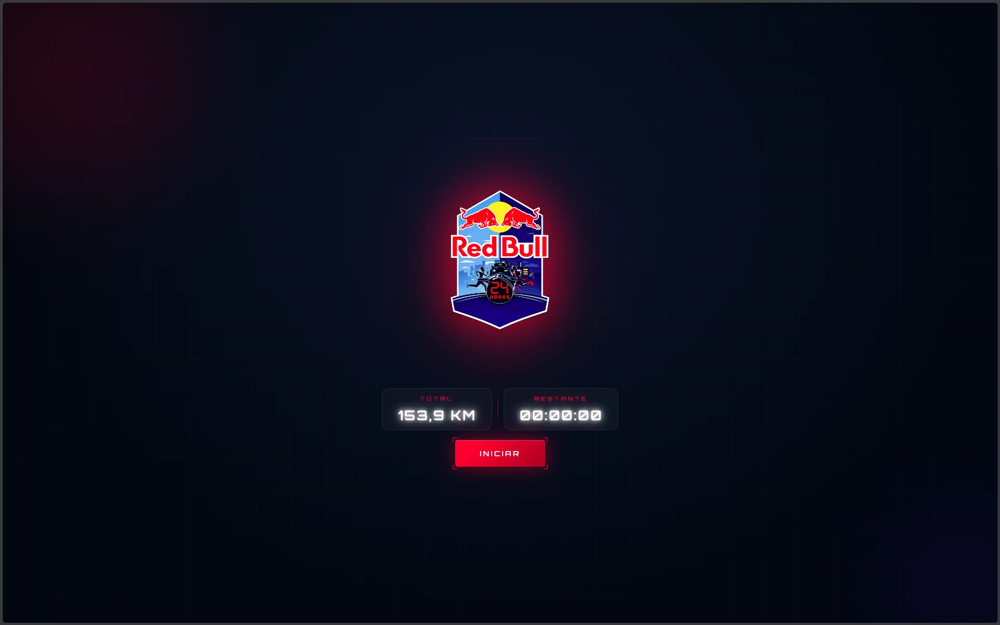
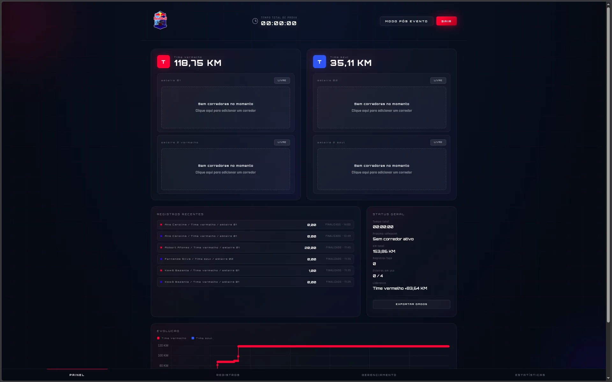
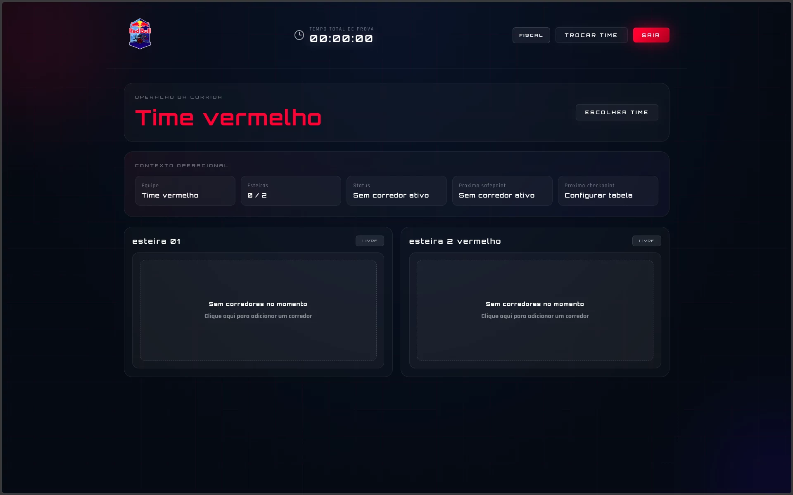
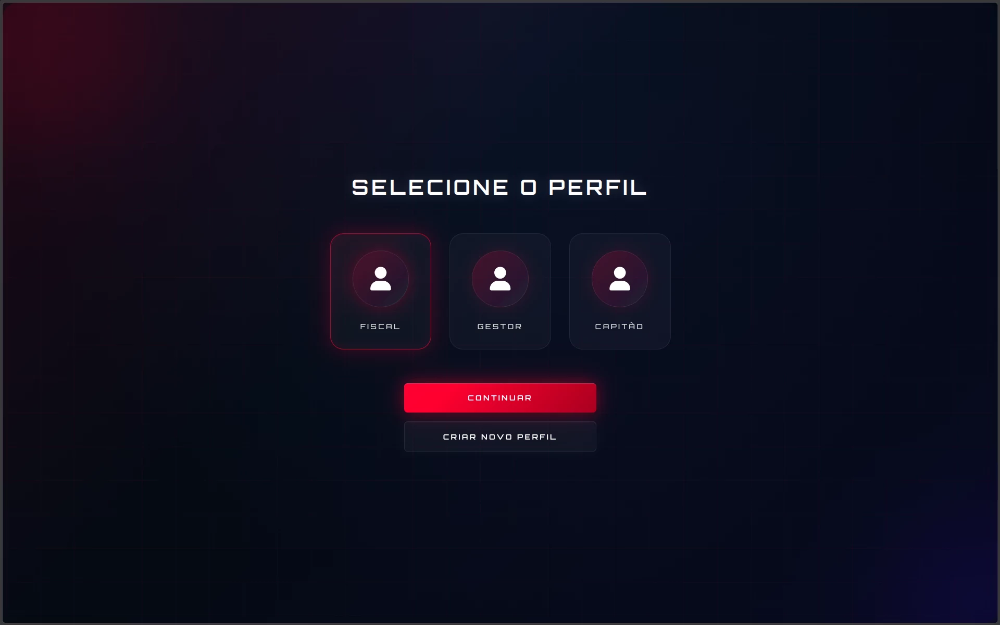
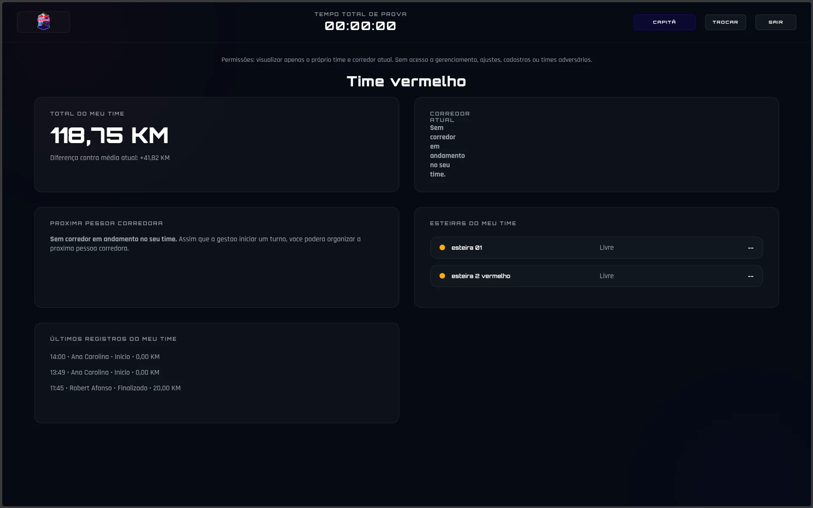

projeto 01
Red Bull 24hrs
Uma prova de revezamento de 24 horas em esteiras precisava de controle em tempo real.
o que eu construí
Um painel com cronômetro da prova, quilômetros de cada time ao vivo e acessos separados para fiscal, gestor e capitão.